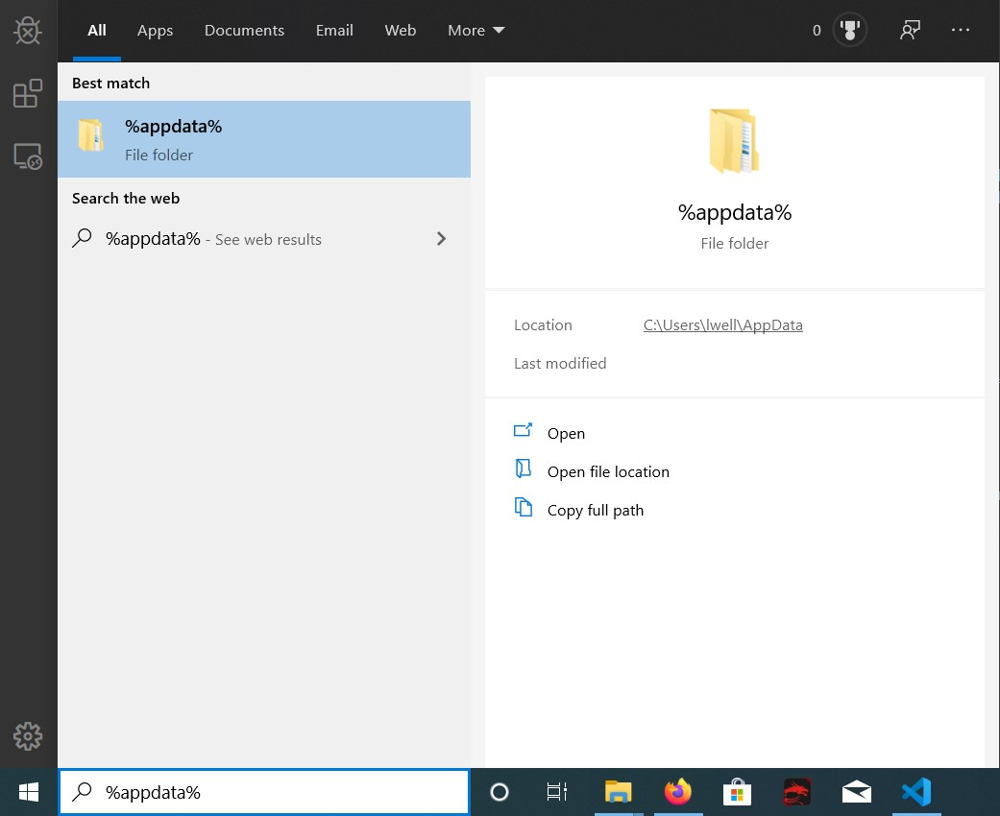
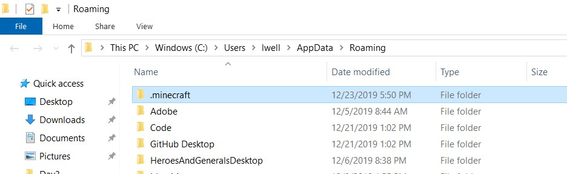
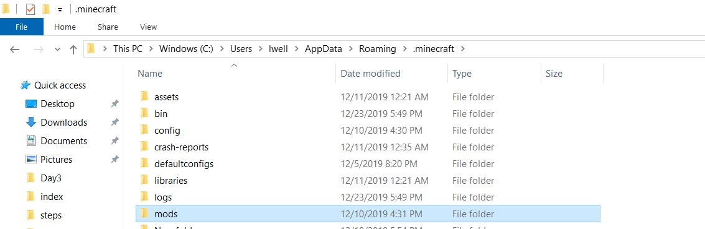
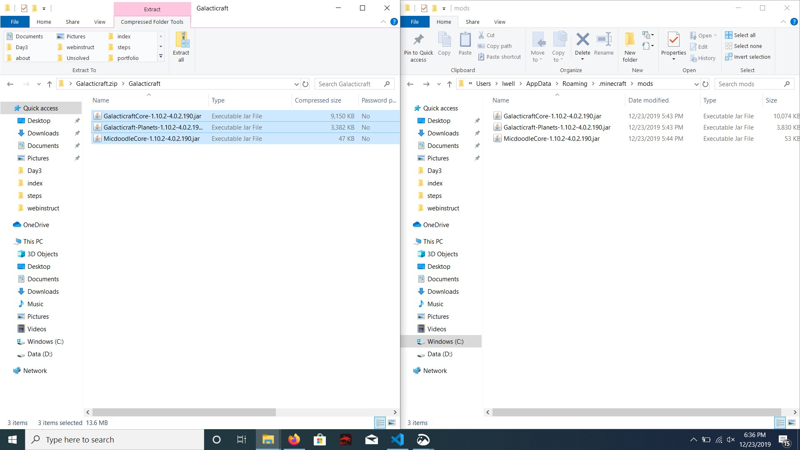

Before we start, you are going to need these items:
Okay, we have made it this far, so here is what you do to get the moon on your Minecraft
In your search bar, type in %appdata% and press enter, here is a picture of what should be in your search bar:

Click on your .minecraft folder, it should be at the very top. After clicking, you should see a lot of folders. Find the mods folder and double click.


You remember the Galacticraft files you downloaded? Double click on that file and find the 3 .jar executables. Copy and paste those 3 executables into your mods folder.

Now open up Minecraft! Click on mods and see if Galacticraft is listed, if not, hit me up on Snapchat.
Join my server, the address is liam.serv.gs
You're done! If you need any help, hit me up on Snapchat, otherwise have fun!